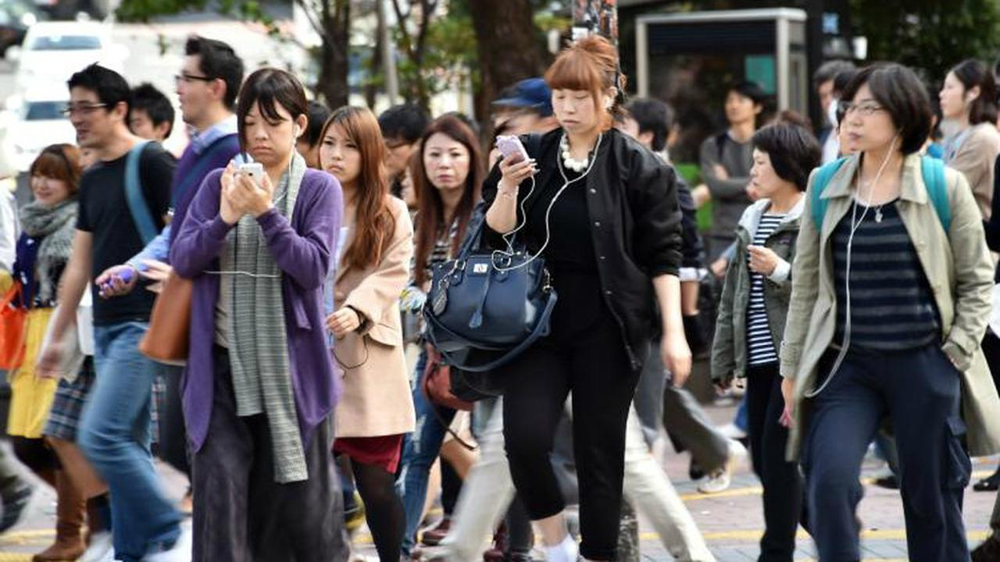
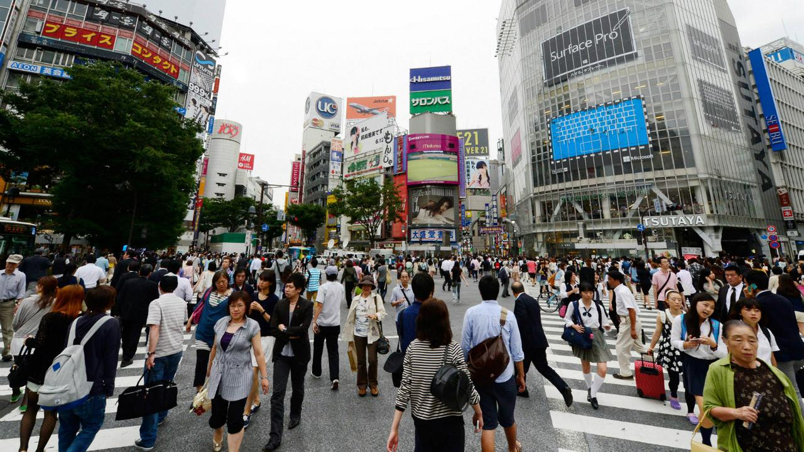

Liputan6.com, Jakarta - Saat pandemi corona COVID-19 menyebar dan jumlah mereka yang terinfeksi dan kematian meroket di berbagai lokasi di seluruh dunia, teka-teki muncul di Jepang karena relatif lambatnya peningkatan angka-angka tersebut di sana.
Dilansir dari Japan Times, Sabtu, 4 April 2020, penjelasan tambahan untuk angka-angka tersebut telah terbentuk di ruang publik, bahwa praktik budaya Jepang mungkin berada di belakang laju epidemi yang relatif lambat di sana. Contoh dari sudut pandang ini adalah tweet viral dari @sctm_27 pada 25 Maret, yang telah mengumpulkan lebih dari 42 ribu suka pada tulisan ini.
Daftar budaya Jepang yang telah terbentuk itu di antaranya, budaya mengenakan masker, sangat sedikit bersentuhan, seperti memeluk atau berjabat tangan. Selain itu, warga Jepang tidak memakai sepatu di rumah, kebersihan toilet umum dan restoran, dan air bersih dan udara. Hal-hal itu sebagai penjelasan potensial terhadap teka-teki rendahnya angka corona COVID di sana. Demikian pula, sebuah unggahan blog populer tentang strategi COVID-19 Jepang yang menyebutkan bahwa mencuci tangan dan mengenakan masker, serta kurangnya jabat tangan dan pelukan.

Dalam sebuah thread Twitter terbaru, ahli biologi sel Hironori Funabiki menyoroti beberapa faktor yang diyakini memiliki peran dalam melawan penyakit di Jepang. Selain penggunaan masker, pembicaraan yang minim tentang transportasi umum, serta praktik makan dengan tangan dalam beberapa kegiatan makan disebut-sebut sebagai senjata penangkal penyakit di negara tersebut.
Meskipun penggunaan masker memiliki manfaat yang tidak dapat dipungkiri, dan budaya kebersihan yang kuat di Jepang patut diacungi jempol, namun masih sulit untuk menyimpulkan bahwa hal-hal tersebutlah yang menjadi satu-satunya faktor penyebab rendahnya angka kasus COVID-19 di Jepang.
Kentaro Iwata, seorang spesialis penyakit menular dari Universitas Kobe, menolak pendekatan yang menghubungkan budaya dengan penyebaran virus corona baru. "Saya tidak berpikir kita dapat mengatributkan faktor-faktor berdasarkan pada budaya," tegasnya. "Tidak peduli budaya apa yang ada, ketidaksengajaan tetap dapat mempercepat penyebaran virus corona."
Menganggap diri sebagai pengecualian dalam penanganan pandemi bisa berbahaya, karena hal tersebut dapat memunculkan rasa puas diri yang berlebihan atau bahkan merasa tidak terkalahkan. Ini bisa menyebabkan penurunan kewaspadaan terhadap pentingnya menjaga jarak sosial, yang pada akhirnya dapat mengakibatkan lonjakan kasus infeksi yang merugikan.